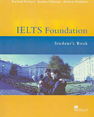

作者 achael Roberts, Joanne Gakonga and Andrew Preshous
出版社 Macmillan
全冊共12個單元，書中根據IELTS測驗的主題特色－人文、社會、科學等，提供生活化又新奇有趣的報章雜誌文章和口說活動探討，如：史上第一位太空渡假遊客、軟體將你的生活放進磁碟中、廣告藝術，甚至以「IELTS準備」為末單元的主題，讓學生討論出國唸書的問題、考試辛苦談，以及近年東亞學生赴英求學的問題。 寫作教學針對圖表分析與主題寫作，皆提供範文及句型歸類或字彙教學，幫助學生快速掌握IELTS寫作測驗靈活的作文考題。
單元中各部分皆以IELTS全真試題，給予學生最直接、最真實的IELTS聽說讀寫、發音、字彙與文法訓練。書末含單元文法與字彙的練習頁、寫作範本以及聽力錄音稿，方便自修學習。
建議售價NT$590